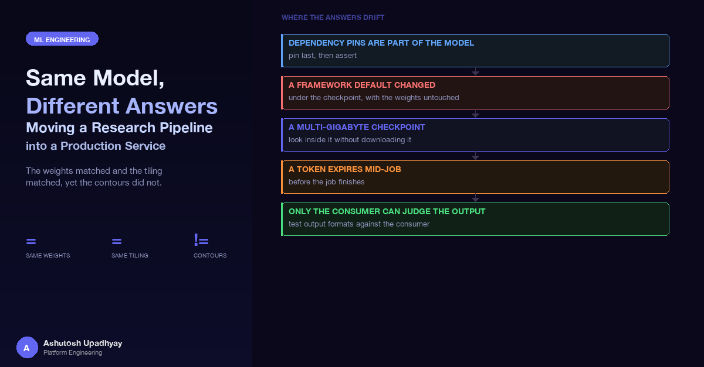

The weights matched and the tiling matched, yet the contours did not. Dependency pins as part of the model, a framework default that changed under a checkpoint, reading a multi-gigabyte checkpoint without downloading it, tokens that expire mid-job, and output formats that only the consumer can judge.
I put the production segmentation worker next to the reference workflow pipeline that the research team uses for the same model. Both run the same tissue-segmentation weights, with the same tiling and the same smoothing of the stitched predictions. The question was simple: should they agree? One comment in the reference pipeline's container definition recorded that they might not. On their two platforms the class heatmap and its argmax were identical. After that point, a different, unpinned OpenCV had reshaped or dropped about 13% of the contours.
That comment reorganised how I think about moving research code into a service. The model was not the thing that differed. The weights were byte-identical and the per-pixel output matched. The difference lived in the unglamorous code between "class mask" and "polygons a viewer can draw", and it was controlled by a line in a dependency list. This post is about that class of drift, and about the other places where the same model can give different answers once it is wrapped in a queue, a container and a viewer integration.
The 13% is the reference pipeline's own finding. I did not re-measure it on the service. I took their measurement as the reason to match their pin exactly, and the rest of this post follows from treating the pin as part of the model.
Segmentation models output a per-pixel score for each class. Everything a downstream user sees is derived from that: the class mask is vectorised into contours, small ones are filtered by area, and the survivors are simplified into annotation polygons. Contour extraction and area calculation are library code, and library code has versions. A minor-version change in a computer-vision library is allowed to change how a contour is traced, how a degenerate one is handled, or how an area is computed near a threshold. None of that is a bug in the library. All of it changes your output.
The trap is where you look. If you compare two implementations by their model outputs, they agree, and you conclude that the port is faithful. The divergence only appears when you compare the artefact the user receives. The reference team found it because they compared contours against the platform they had validated on, not the raw prediction.
Before this comparison the production worker had an older minor version of the library than the reference image. It now pins the reference pipeline's exact version, along with the imaging library, and its image build fails if they are not what the pin says. Here is the shape of the audit, in the order I would run it again.
| Layer | What can differ between research and service | How it shows up |
|---|---|---|
| Post-processing libraries | Computer-vision and imaging library minor versions | Same prediction, different contours. No error, no warning |
| Numerical stack | Array library major version pulled in by a transitive install | Import errors, or subtly different dtypes and promotion rules |
| Base image | A mutable tag whose content changed after the reference was built | "Same image name" with different contents |
| Framework defaults | Model-loading behaviour changed in a framework release | The checkpoint loads in research and is refused in the service |
| Output encodings | Byte-level formats read by third-party consumers | The consumer rejects the file, or accepts it and draws nothing |
Pinning a version in a requirements file is not the same as getting that version in the image. The base image brings its own packages. A later install of something unrelated can pull in a different release of a library you thought you had fixed. The reference pipeline's container definition handles this in a way worth copying: it installs the pins early, installs everything else, then re-installs the critical pins as the last step and asserts the result in the same layer.
# Early: fix the numerical stack before anything else can move it
RUN pip install --no-cache-dir "numpy==X.Y.Z"
# ... other installs, private packages, source checkouts ...
# Reinstall in case anything above upgraded it
RUN pip install --no-cache-dir "numpy==X.Y.Z"
# Last: the libraries that shape the output. Nothing after this may override them.
RUN pip install --no-cache-dir \
"opencv-python-headless==A.B.C" \
"pillow==P.Q.R" \
&& python -c "import cv2; assert cv2.__version__ == 'A.B.C'" \
&& python -c "import PIL; assert PIL.__version__ == 'P.Q.R'"The assertion is the important part. It turns "I believe the image has the right version" into a build failure when it does not. The same logic applies one level down: the service's base image is pinned by content digest rather than by tag, because the tag the reference pipeline had used had since been re-pushed with newer content. A tag is a mutable pointer, and a model whose behaviour depends on its environment cannot be defined in terms of one.
The wider point connects to the earlier post on silent wrong data: most of this raises no exception. The only signals are numbers that are slightly off, and you only see them if you chose to compare. Dependency pinning belongs in the same category as the checkpoint itself: it is part of the model's definition.
The base image used for the newer checkpoint ships a deep-learning framework release with a stricter default for loading serialised checkpoints. Recent releases refuse, by default, to unpickle arbitrary objects, which is a sensible security default for untrusted files. This checkpoint is not just a dictionary of tensors. It is a pickled dictionary that also carries training metadata, so the default load is refused.
There are two honest ways to respond. One is to opt out of the safe default and accept the pickle, which is a deliberate decision that the file comes from a trusted catalogue. The other is to restructure the artefact. The service takes the first route, writes the decision down in a comment at the call site, and puts guards around it rather than leaving the load bare:
weights = torch.load(path, map_location="cpu", weights_only=False) # trusted catalogue only
if "model_config" not in weights:
raise KeyError("not a segmentation checkpoint of the expected family")
# What the checkpoint says about itself must agree with the runtime config
mismatched = {k: (weights.get(k), v) for k, v in expected.items()
if k in weights and weights[k] != v}
if mismatched:
raise ValueError(f"checkpoint disagrees with config (ckpt, config): {mismatched}")The second guard is the one that earns its keep. A checkpoint carries its own account of how it was built. If that account disagrees with the configuration the service is about to run it under, the right behaviour is a loud failure at load time, not a quiet run that produces plausible, wrong output on the first slide.
Sometimes you need to know what a checkpoint contains before you decide how to load it: the metadata it declares, the names and shapes of its tensors. The checkpoint is shipped inside a zip archive in object storage, and unpacked it is more than 4 GB. Downloading it to a workstation to read a few kilobytes of structure is the wrong trade.
Two properties make a cheaper route possible. A zip archive stores its table of contents at the end, so a reader that can seek can list members and fetch one without touching the rest. And a serialised tensor is a small recipe (storage reference, offset, shape, strides) followed by raw bytes elsewhere in the file. If you read only the recipes, you learn every shape without reading one weight.
Object storage supports ranged GET requests, so a small file-like wrapper whose read issues a range request gives a standard zip reader the seekable file it expects. For the checkpoint file inside that archive, which is itself a zip, stream-decompress just the head until the pickle entry appears. Then unpickle with a custom class resolver that never imports the real classes:
class RangeFile(io.RawIOBase):
def readinto(self, buf):
end = min(self.pos + len(buf), self.size) - 1
data = s3.get_object(Bucket=BUCKET, Key=KEY,
Range=f"bytes={self.pos}-{end}")["Body"].read()
buf[:len(data)] = data
self.pos += len(data)
return len(data)
class ShapeOnly(pickle.Unpickler): # a sketch: RangeFile also needs seekable()/seek()/tell()
def persistent_load(self, pid):
return InertStub(pid) # tensor storages are referenced by persistent IDs
def find_class(self, module, name):
if name in ("_rebuild_tensor_v2", "_rebuild_tensor"):
return lambda storage, offset, size, *a, **k: TensorStub(size)
if (module, name) == ("collections", "OrderedDict"):
return collections.OrderedDict
return InertStub # everything else: a stub that runs no codeTwo things make this reasonable to run on a file you have not inspected. Every class the pickle asks for resolves to an inert stub or a plain container, so no object constructor from the file runs; keep that allowlist tiny, because allowing arbitrary built-ins would hand the pickle eval. And tensor rebuilds are replaced by a function that records only the size, so no weight is ever materialised. For this checkpoint the whole inspection transferred about 25 MB, against more than 4 GB for the checkpoint. It is a good tool to keep around for any large artefact you need to reason about before loading.
The service is a small handler that listens for analysis requests from a commercial digital-pathology platform's viewer, queues them for GPU workers, and reports results back when the workers finish. The viewer issues each request with a short-lived auth token, and a whole-slide inference job can outlive it.
The first design fetched what it needed from the viewer at the end, when it was time to report. That works for short jobs and fails for long ones, with an authorisation error at the very last step, after the expensive work is done and its results are safely stored. One thing the completion step needed was the slide's pixel extent, which the viewer would only give to a holder of a valid token.
The fix is a rule I now apply generally: fetch what you will need later while the credential is fresh, and store it. After enqueuing a job, the handler immediately fetches the slide's dimensions with the fresh token, with a short timeout, and saves them on the job's record. The completion step then resolves the value in order of preference: bounds supplied explicitly on the request, then the cached value, then a value the worker wrote from the slide file itself, and only as a last resort a live call to the viewer, which for a long job would fail with a clear error rather than a confusing one. The eager fetch is non-fatal, because the later steps have fallbacks.
The second half of the fix is about what to do when delivery fails after the work succeeded. The job record already says the work is done. If reporting then throws, the handler must not mark the job failed, because that would create a record that disagrees with reality and that no recovery path would ever look at. Instead it returns without marking the job as notified, and a recovery scan on the next reconnect picks it up again. Because the dimensions are already cached, the retry succeeds.
The last family of differences is the one that looks most like plain bugs. A research pipeline writes files for people. A service writes files for another program, and that program has opinions the documentation did not mention. Three examples, kept at the level of principle.
Encoding must match exactly. The viewer imports a configuration file through a .NET XML importer. It rejected plain ASCII and it rejected a byte-order mark; only the exact byte encoding it expected worked. "It is valid XML" is not the same as "the importer will read it".
The spec said polygon; the consumer wanted something else. Annotations are geometry sent in a binary well-known format. A polygon encoding carries a ring count before the point count. The receiving parser expected the simpler line encoding and read the ring count as the number of points, then consumed the first coordinate bytes as garbage. The result was an error in the viewer and an invisible overlay. Encoding each ring as a closed line string, which the receiving parser reads correctly, fixed it. The lesson is not about this particular format. It is that two parsers can both claim to accept "a polygon" and disagree on the bytes.
"Success" is not a rendering test. A green status from an integration endpoint tells you the payload arrived; it says nothing about whether the other side understood it. Here the only real signal was whether the overlay drew in the viewer. Any output format with a downstream consumer needs a test that opens the result in that consumer, or in a faithful stand-in for it. Reading the specification is not a substitute.
For the file formats used to draw raster overlays, and the other traps of running this class of workload on GPU nodes, see the earlier post on digital pathology AI on Kubernetes. I will not repeat them here.
Every one of these drifts was found by someone choosing to compare two things. I would like that comparison to be a property of the output rather than an act of diligence. The idea is a provenance stamp: every result the service writes carries a small fingerprint of the environment that produced it, including the image digest, the versions of the handful of libraries that shape the output, and a content hash of the checkpoint. When two runs of the same slide disagree, the first question, whether the environments differed, becomes a lookup instead of an investigation.
Disclaimer: The views and opinions expressed in this post are my own and do not represent those of my employer or any organisation I am associated with.